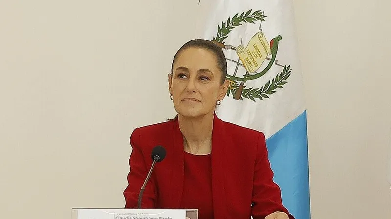
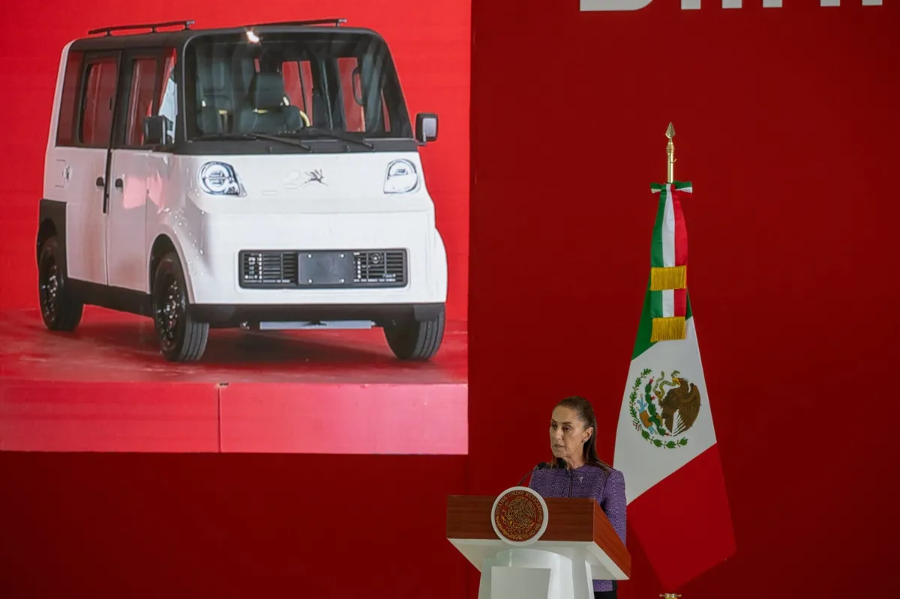

OKpolítico
OKpolíticoClaudia Sheinbaum: noticias de hoy
Decisiones, declaraciones y mañaneras de la presidenta de México. Última actualización: 20 de noviembre de 2026.



Sheinbaum señala presunto beneficio de Salinas Pliego en el Fobaproa
La presidenta Claudia Sheinbaum acusó a Ricardo Salinas Pliego de beneficiarse indirectamente del rescate del Fobaproa en la venta de Salinas y Rocha. Frente a la cifra gubernament
14 de noviembre de 2026
Mañanera 13 nov: Narco paga música, turismo récord y auditorios abandonados
En la mañanera del 13 de noviembre, Sheinbaum entregó 40.2 mdp de la subasta de 57 motos decomisadas a Ryan Wedding para el Conservatorio de Tultepec (3,500 estudiantes, licenciatu
13 de noviembre de 2026Cebolla alcanza 69 pesos el kilo en la Ciudad de México
La cebolla sube 82.2 % y el jitomate 43.9 % en un año, superando la inflación general. La Presidenta Sheinbaum señala una inflación del 4.6 % y anuncia medidas, pero datos del INEG
12 de noviembre de 2026
Sheinbaum y OpenAI discuten IA en el sector salud
Claudia Sheinbaum recibió a Greg Brockman, cofundador de OpenAI, en Palacio Nacional y conversó sobre el uso de inteligencia artificial en salud. La mandataria recordó el proyecto
12 de noviembre de 2026Inversión WEG, APEC 2028 y App Bienestar
Resumen de la mañanera del 12 noviembre: WEG invierte 250 mdd en Hidalgo para data centers; Sheinbaum a APEC China (sede 2028); App Banco Bienestar para 43 millones; PIB 3.2% Q3 pe
12 de noviembre de 2026


SOMOS denuncia a Sheinbaum, 2 secretarias y 12 gobernadores ante el INE
El partido SOMOS denunció ante el INE a la presidenta Claudia Sheinbaum, secretarias de Estado y 12 gobernadores por presunta injerencia electoral rumbo a 2027. La queja de 63 pági
11 de noviembre de 2026
4 temas de la mañanera del miércoles 11 de noviembre
Resumen de la mañanera del miércoles 11 de noviembre de 2026. La presidenta Claudia Sheinbaum encabezó la conferencia, en la que un funcionario del IMSS Bienestar presentó 12 accio
11 de noviembre de 2026


Sheinbaum anuncia récord de empleos y 24 mil millones para La Escuela es Nuestra
La presidenta Claudia Sheinbaum anunció un récord de empleos formales y una inversión de casi 24 mil millones de pesos para el programa La Escuela es Nuestra. También presentó dato
10 de noviembre de 2026